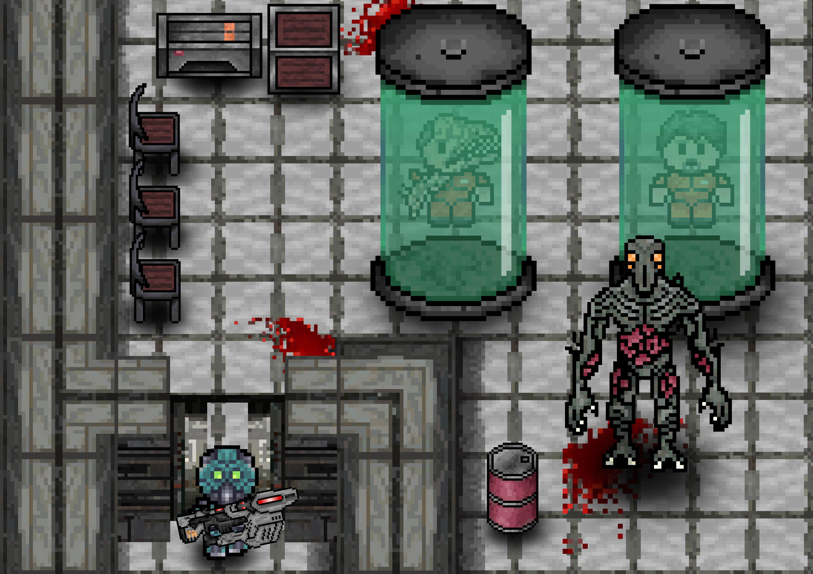
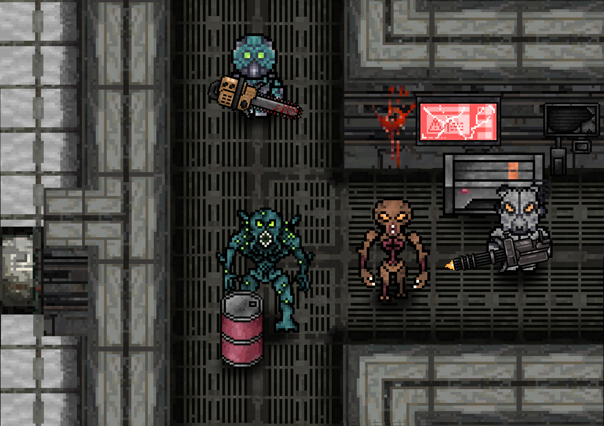
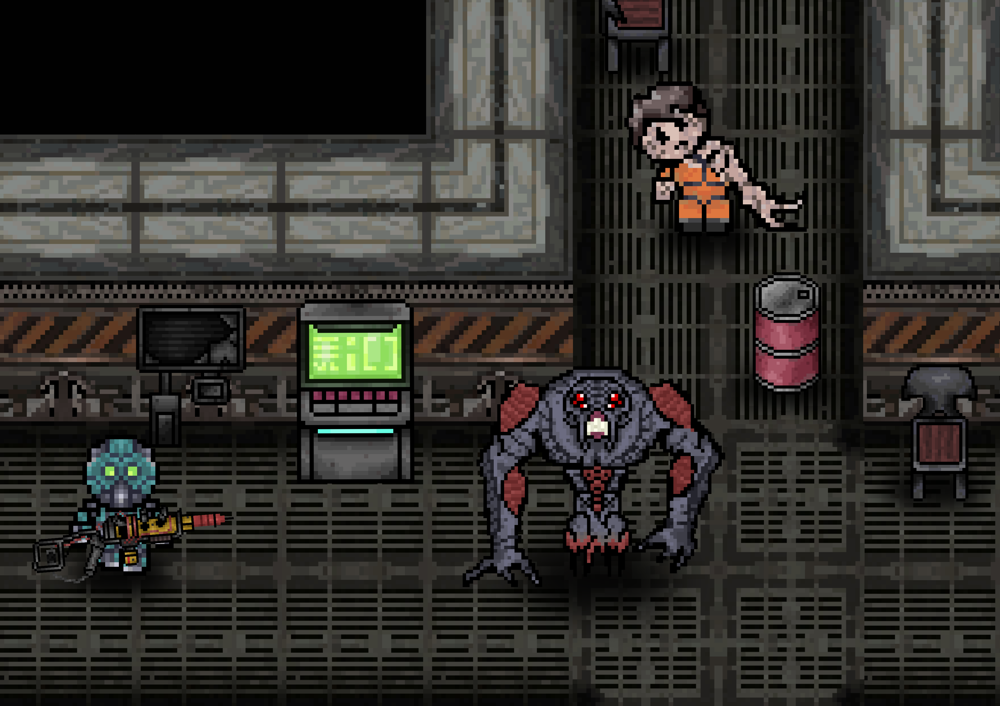

Enclave est un Rogue-lite de science-fiction développé par Aura Corporation prévu à la sortie pour 2025. C'est un jeu unique, à l'histoire originale mêlant action, difficulté et horreur.
Au vingt-quatrième millénaire, l'Humanité atteint le sommet de sa prospérité du fait de ses nombreuses conquêtes à travers la voie lactée.
Avec la création d'un empire appelé Les Colonies-Unies, chaque humain vivait dans la paix et la quiétude la plus complète.
Mais pour assurer le bien-être d'une population humaine toujours plus grande, d'innombrables mondes furent terraformés pour l'agriculture et l'élevage et
ce en dépit des éspèces intelligentes qui y vivaient.
Sur une planète fermière appelée Marvin IV, on a longtemps conté une histoire cruelle qui inspirait la peur et vue comme l'incarnation de la vengeance et de la folie.
Ce récit est connu sous le nom de...
Enclave est un jeu à gameplay rapide et nerveux. Chaque niveau possède une structure similaire tout en laissant une place pour des éléments de gameplay originaux.
Le joueur commence le niveau dans une zone sûre isolée du reste, une sorte d'introduction. C'est lorsqu'il chooisit de la quitter que le niveau débute réellement.
Au fur et à mesure que le joueur progresse, la difficulté augmente. Pour compléter un niveau il devra se rendre à certains points de la carte pour accomplit divers objectifs.
Bien sûr pour compléter un niveau il devra surtout réster en vie car si il échoue, l'histoire se termine et pas d'autres moyens que de recommencer depuis le début pour finir le jeu.
Pour faciliter les choses, le joueur pourra garder certains équipements et certaines compétences qu'il aura acquis.
AFFRONTEZ DES ENNEMIS PUISSANTS
JOUER AVEC VOS AMIS
OU EN SOLO
